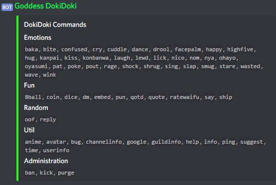

About:
Doki Doki Discord Bot is made with Discord.js-commando and is hosted on Heroku. The Devs of DokiDoki are Kandrina and Akashic. DokiDoki was Made on March 12 2018 and Kandrina Joined the team 2 days later. DokiDoki is a new Discord Bot, which I wish will become popular one day. Right now there are only 5 command groups, and very little commands, but the bot can still be used easily. The Bots Uptime should be around 99%. DokiDoki Also has a DiscordBot List page, and a Server Dedecated to it. The Help Command: 